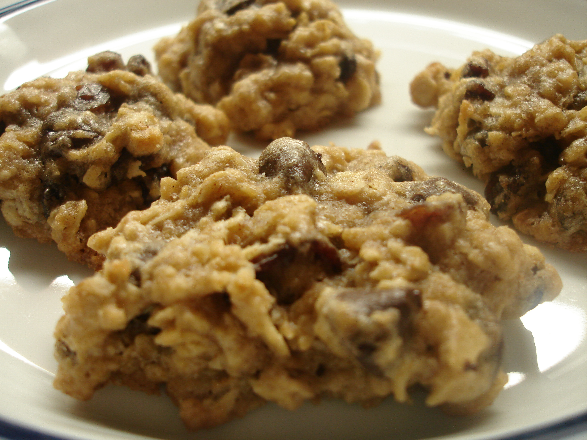

The Ultimate Chewy Oatmeal Raisin Cookies

Description
There is nothing quite like the comforting aroma of
cinnamon and toasted oats wafting from the oven.
This recipe delivers the ultimate oatmeal raisin
cookie: crisp around the very edges, incredibly soft
and chewy in the center, and bursting with plump,
juicy raisins. Perfect with a cold glass of milk or
a hot cup of tea, these cookies taste exactly like a
warm hug from grandma’s kitchen—only better.
Ingredients
- 1 cup (2 sticks) unsalted butter (melted and cooled slightly)
- 1 cup dark brown sugar (packed)
- ½ cup granulated white sugar
- 2 large eggs (at room temperature)
- 2 tsp pure vanilla extract
- 1 ½ cups all-purpose flour
- 1 tsp baking soda
- 1 tsp ground cinnamon
- ½ tsp salt
- 3 cups old-fashioned rolled oats (do not use instant oats)
- 1 ½ cups raisins (plump)
- Preheat your oven to 350°F (175°C). Line two large baking sheets with parchment paper or silicone baking mats.
- In a large bowl, vigorously whisk together the melted butter, dark brown sugar, and white sugar until no lumps remain. Whisk in the eggs one at a time, followed by the vanilla extract, until the mixture looks smooth and slightly pale.
- Add the flour, baking soda, cinnamon, and salt to the wet mixture. Use a wooden spoon or rubber spatula to fold the ingredients together just until the flour disappears. (Over-mixing makes the cookies tough!).
- Fold in the rolled oats and raisins until they are evenly distributed throughout the dough. The dough will be quite thick and sticky.
- Drop large scoops of dough (about 3 tablespoons each) onto the prepared baking sheets, leaving about 2 inches of space between them. Bake for 10 to 12 minutes.
Home